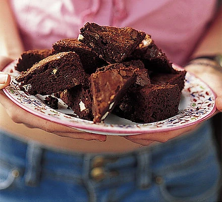

ut 185g unsalted butter into small cubes and tip into a medium bowl. Break 185g dark chocolate into small pieces and drop into the bowl.
Fill a small saucepan about a quarter full with hot water, then sit the bowl on top so it rests on the rim of the pan, not touching the water. Put over a low heat until the butter and chocolate have melted, stirring occasionally to mix them.
Remove the bowl from the pan. Alternatively, cover the bowl loosely with cling film and put in the microwave for 2 minutes on High. Leave the melted mixture to cool to room temperature.
While you wait for the chocolate to cool, position a shelf in the middle of your oven and turn the oven on to 180C/160C fan/gas 4.
Using a shallow 20cm square tin, cut out a square of kitchen foil (or non-stick baking parchment) to line the base. Tip 85g plain flour and 40g cocoa powder into a sieve held over a medium bowl. Tap and shake the sieve so they run through together and you get rid of any lumps.
Chop 50g white chocolate and 50g milk chocolate into chunks on a board.
Break 3 large eggs into a large bowl and tip in 275g golden caster sugar. With an electric mixer on maximum speed, whisk the eggs and sugar. They will look thick and creamy, like a milk shake. This can take 3-8 minutes, depending on how powerful your mixer is. You’ll know it’s ready when the mixture becomes really pale and about double its original volume. Another check is to turn off the mixer, lift out the beaters and wiggle them from side to side. If the mixture that runs off the beaters leaves a trail on the surface of the mixture in the bowl for a second or two, you’re there.
Pour the cooled chocolate mixture over the eggy mousse, then gently fold together with a rubber spatula. Plunge the spatula in at one side, take it underneath and bring it up the opposite side and in again at the middle. Continue going under and over in a figure of eight, moving the bowl round after each folding so you can get at it from all sides, until the two mixtures are one and the colour is a mottled dark brown. The idea is to marry them without knocking out the air, so be as gentle and slow as you like.
Hold the sieve over the bowl of eggy chocolate mixture and resift the cocoa and flour mixture, shaking the sieve from side to side, to cover the top evenly.
Gently fold in this powder using the same figure of eight action as before. The mixture will look dry and dusty at first, and a bit unpromising, but if you keep going very gently and patiently, it will end up looking gungy and fudgy. Stop just before you feel you should, as you don’t want to overdo this mixing.
Finally, stir in the white and milk chocolate chunks until they’re dotted throughout.
Pour the mixture into the prepared tin, scraping every bit out of the bowl with the spatula. Gently ease the mixture into the corners of the tin and paddle the spatula from side to side across the top to level it.
Put in the oven and set your timer for 25 mins. When the buzzer goes, open the oven, pull the shelf out a bit and gently shake the tin. If the brownie wobbles in the middle, it’s not quite done, so slide it back in and bake for another 5 minutes until the top has a shiny, papery crust and the sides are just beginning to come away from the tin. Take out of the oven.
Leave the whole thing in the tin until completely cold, then, if you’re using the brownie tin, lift up the protruding rim slightly and slide the uncut brownie out on its base. If you’re using a normal tin, lift out the brownie with the foil (or parchment). Cut into quarters, then cut each quarter into four squares and finally into triangles.
They’ll keep in an airtight container for a good two weeks and in the freezer for up to a month.